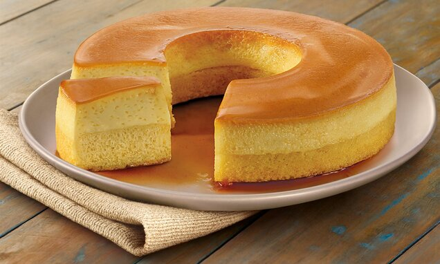

Início
Bolo Pudim

Tempo de preparo: 60MIN. Rendimento de 15 porções.
Ingredientes
Bolo
- 3 ovos
- 3 xícaras farinha de trigo
- 2 xícaras de açúcar
- 4 colheres de margarina
- 1 xícara de leite
- 1 pitada de sal
- 3 colherzinhas de fermento
Pudim
- 3 ovos
- 1 lata de leite condensado
- A mesma medida da lata de leite>
Modo de Preparo
- Bata a manteiga com o açúcar e os ovos, por 5 minutos.
- Depois coloque a farinha e o leite, o sal e por último o fermento, continue batendo.
- Caramelize a forma e coloque a massa.
- Bata no liquidificador os ingredientes do pudim.
- Coloque em cima da massa.
- Leve ao forno médio, preaquecido, por aproximadamente 30 minutos.